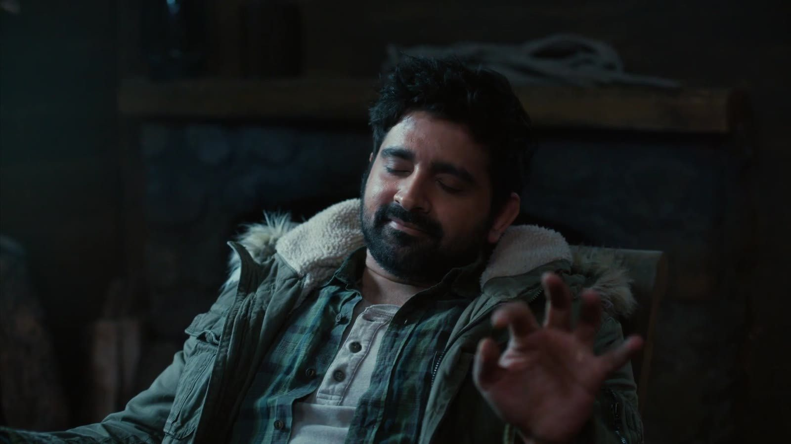
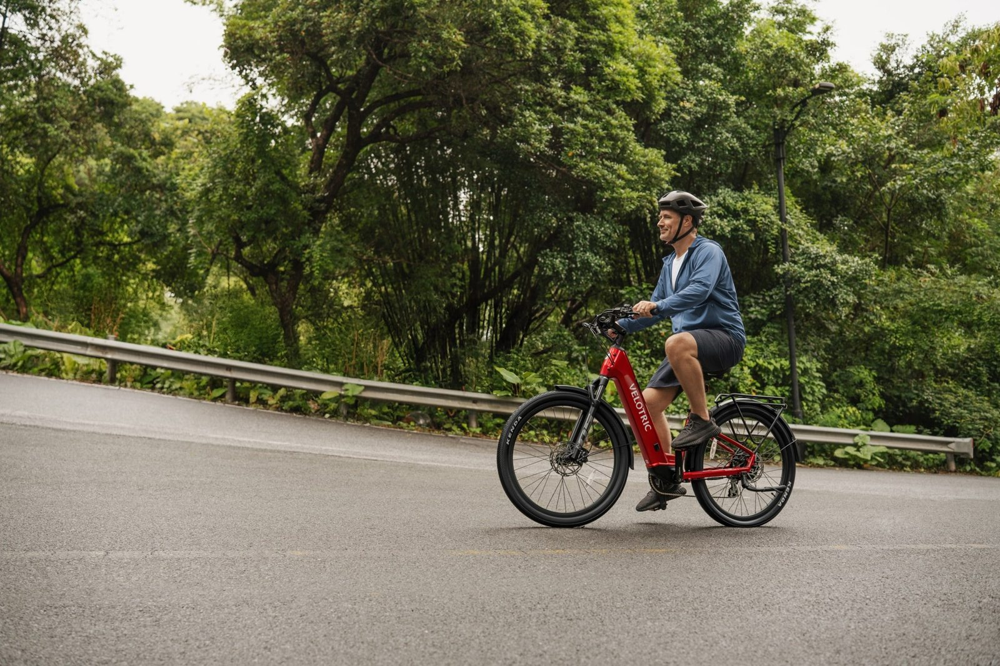
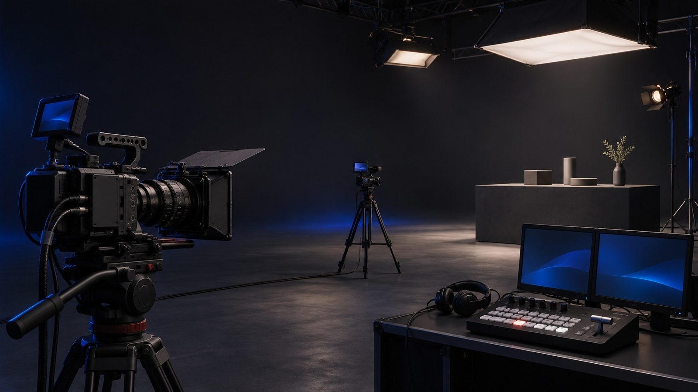

Production planning
Schedule, rundown and coordinated preparation.

WHAT WE DO
Clear stories.
Considered imagery.
Live audience connection.
Stories that make products matter.

Products, people and the world around them.

From studio planning to going live.

Studio, crew, hosts and live production support, brought together for overseas audiences.
Schedule, rundown and coordinated preparation.
Set, equipment and lighting for talent and products.
Presenter and product perspectives.
On-camera talent, microphones and live audio.
Live scenes, switching and broadcast support.
A dedicated point of contact across teams.
The format and production scope are planned around each project.